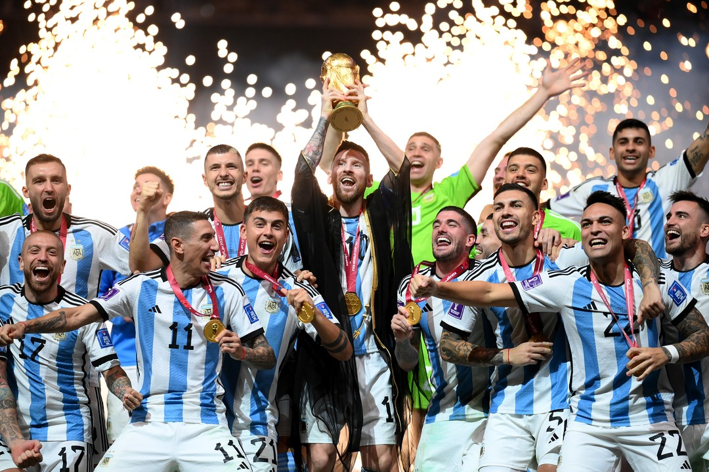

Argentina es campeon del mundo, de la mano de Lionel Messi y la Selección.
Argentina ganó la final del mundo por penaltis en un partido de infarto contra Francia.
La Scaloneta sabe sufrir, pero también sabe ganar. Messi fue determinante, es histórico
y ya tiene su Mundial merecido. ¿Se podía pedir final una final más emocionante?
Fue la tercera copa ansiada y sufrida en el mejor partido de Qatar 2022 y quizá la mejor final de la
historia.
El partido terminó en empate 3-3 y se fue a penaltis. El arquero Emiliano "Dibu" Martínez fue héroe en el
tiempo añadido y Messi para muchos zanjó el debate del mejor futbolista de la historia.